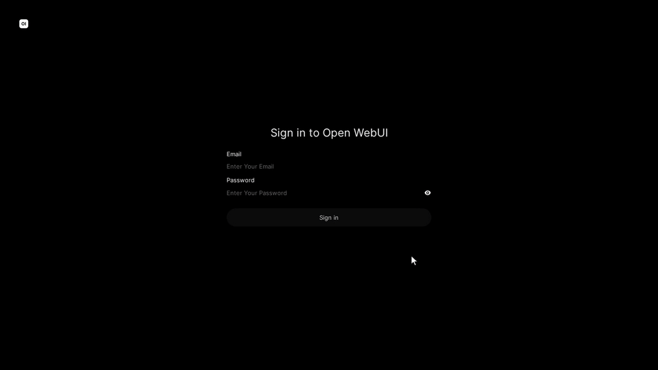
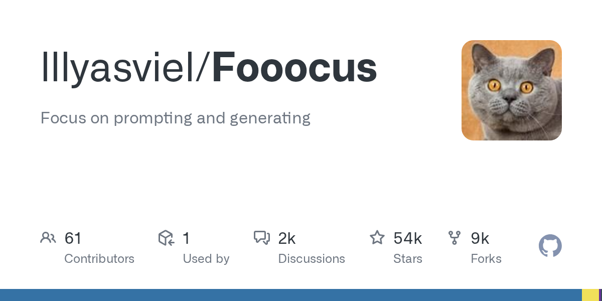
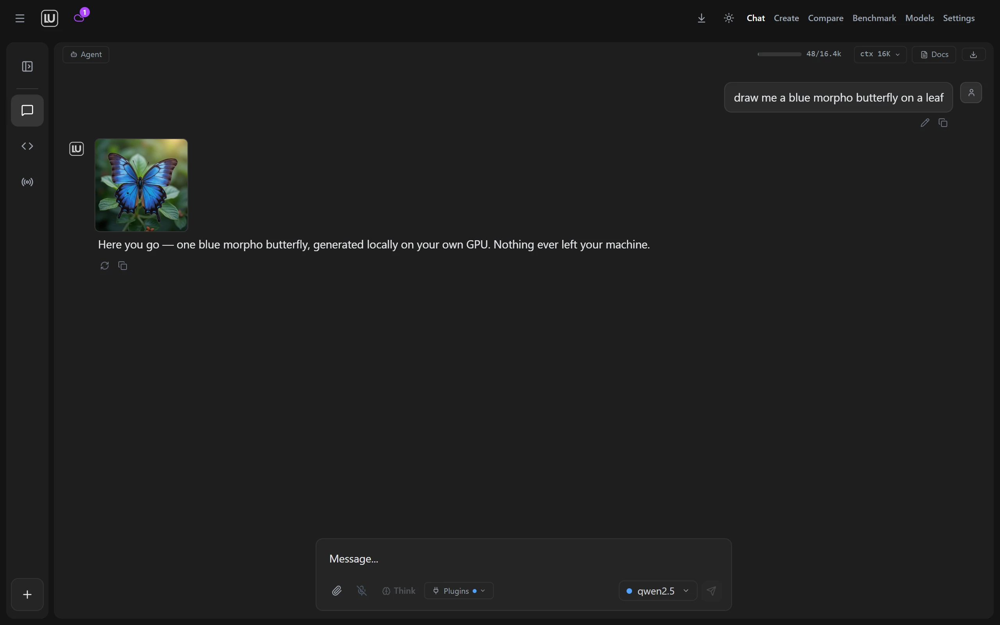
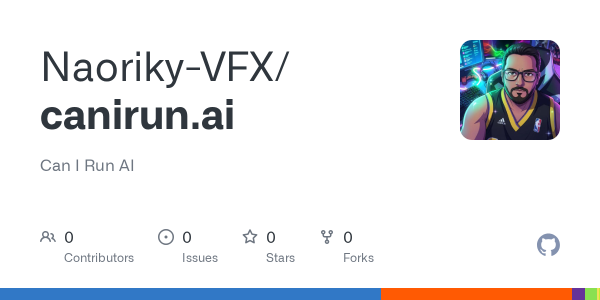

Modelos locais
IA rodando no seu PC (chat, voz, imagem).
15 links
| Vídeo | Projeto | O que faz | Pasta de origem | |
|---|---|---|---|---|
 Ollama: o que é e como configurar (primeiros pas Ollama: o que é e como configurar (primeiros pas | ollama/ollama | 186k★ · DeepSeek, Qwen e Gemma no seu PC com um comando. | curado — busca na internet | |
 Hospedei uma IA no meu Servidor: O Poder do Olla Hospedei uma IA no meu Servidor: O Poder do Olla |  | open-webui/open-webui | 158k★ · interface estilo ChatGPT ligada em modelos locais. | curado — busca na internet |
 Comfyui para iniciantes: tudo o que você precisa Comfyui para iniciantes: tudo o que você precisa |  | Comfy-Org/ComfyUI | 146k★ · imagem e vídeo por nós, rodando local. | curado — busca na internet |
| Como usar MTP no llama.cpp pra aumentar ABSURDAM |  | ggml-org/llama.cpp | 134k★ · motor de inferência que roda até em notebook. | curado — busca na internet |
 Como instalar e usar o Stable Diffusion em 6 min Como instalar e usar o Stable Diffusion em 6 min |  | AUTOMATIC1111/stable-diffusion-webui | 165k★ · a interface mais conhecida para gerar imagens no PC. | curado — busca na internet |
 Nova IA que SUPERA o Chat?| LobeHub Nova IA que SUPERA o Chat?| LobeHub |  | lobehub/lobehub | 85k★ · “super-agentes” com tarefas, horários e relatórios. | curado — busca na internet |
| Baixar e Instalar a Fooocus AI - inteligência ar |  | Lllyasviel/Fooocus | 53.8k★ · imagens com IA sem mexer em mil configurações. | curado — busca na internet |
 LibreChat: Configurando seu próprio hub de IAs LibreChat: Configurando seu próprio hub de IAs |  | LibreChat-AI/LibreChat | 46.6k★ · todos os modelos numa tela só, hospedada por você. | curado — busca na internet |
 ✅TURISTA PORTUGUÊS VIRALIZA AO NARRAR ASSALTO NO ✅TURISTA PORTUGUÊS VIRALIZA AO NARRAR ASSALTO NO |  | janhq/jan | 45.3k★ · alternativa ao ChatGPT que roda sem internet. | curado — busca na internet |
| Aula 99 - RagFlow: Como Criar uma IA Gratuitamen | infiniflow/ragflow | 94k★ · RAG nos seus documentos mostrando de onde tirou. | curado — busca na internet | |
| How to Fine-Tune an AI Model Locally with Unslot |  | unslothai/unsloth | 79k★ · treina e roda LLM local (GGUF/MLX). | curado — busca na internet |
| Aula 38 - Como criar um Assistente de IA usando |  | Mintplex-Labs/anything-llm | 68k★ · conversa com PDFs e planilhas sem mandar pra fora. | curado — busca na internet |
| LocalAI Tutorial - Run Any AI Model Locally (No |  | mudler/LocalAI | 50k★ · engine local para LLM, visão, voz e imagem. | curado — busca na internet |
| Como instalar o Qwen 3.8 - IA SEM CENSURA LOCAL, |  | PurpleDoubleD/locally-uncensored | Estúdio de IA local: chat, imagem e vídeo sem filtro. | PROGRAMAÇÂO IA AGENT / GITHUBS / VARIADOS |
| Quer rodar Agentes de IA localmente? Encontre o |  | Naoriky-VFX/canirun.ai | “Can I Run AI”: diz se a máquina roda determinado modelo. | PROGRAMAÇÂO IA AGENT / PLATAFORMAS DE IA / GITHUBS |